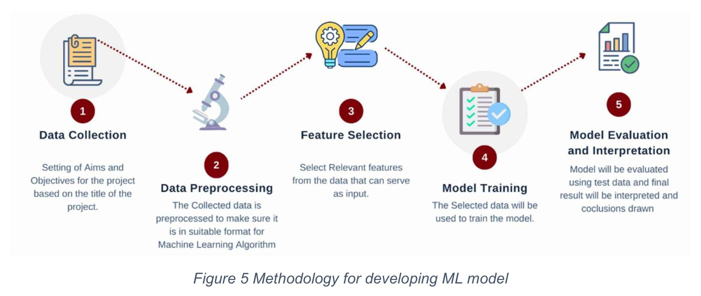
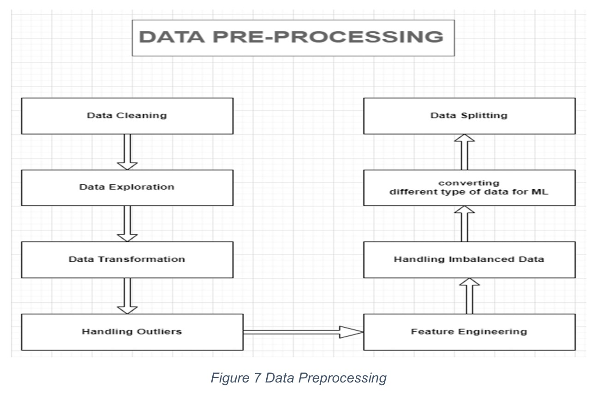
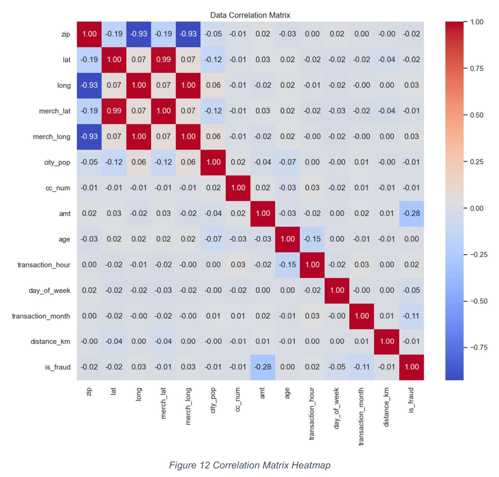
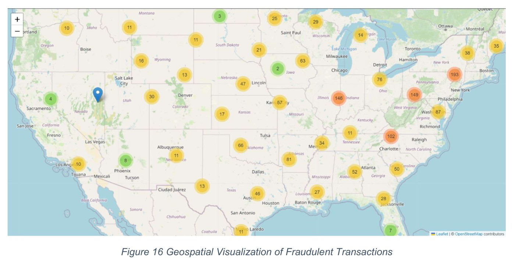
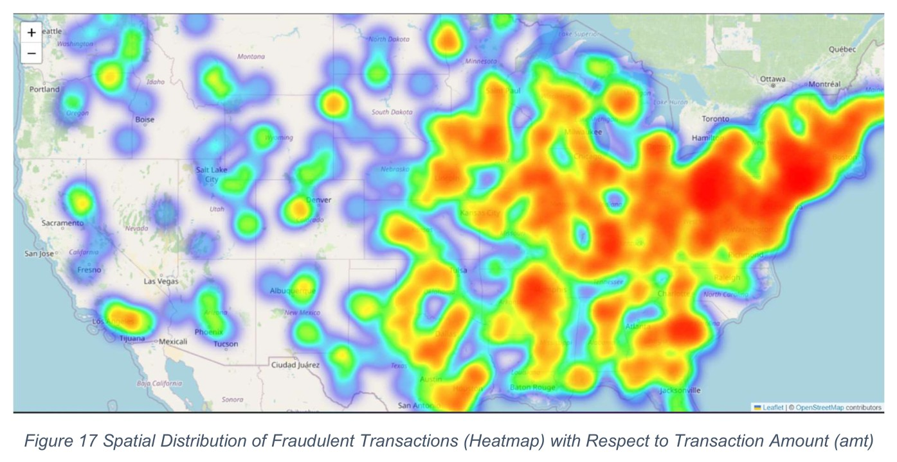
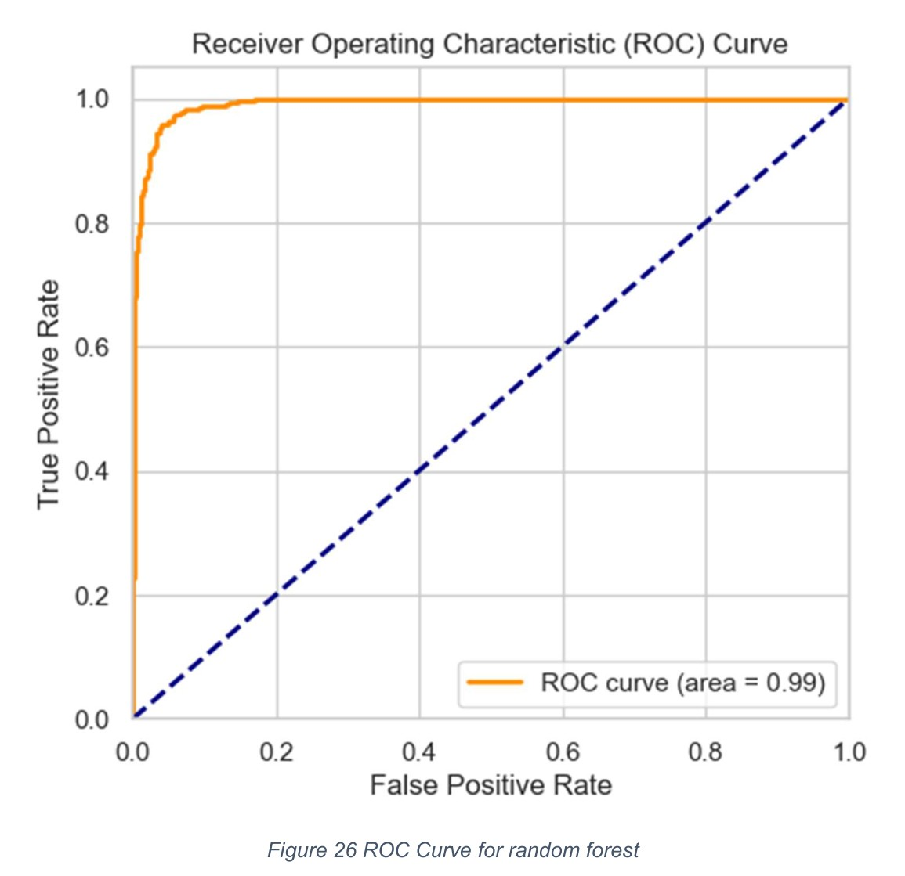
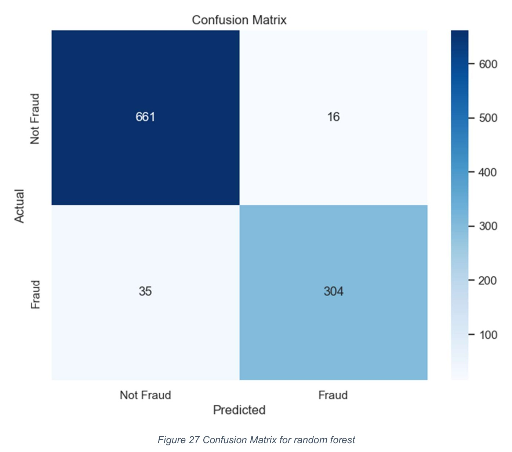

Credit Card Fraud Detection Using Machine Learning

Research overview
Research objective
Investigate machine learning methods for identifying fraudulent credit card transactions using a Kaggle transaction dataset.
Methodology
The dissertation follows data collection, preprocessing, feature selection, model training and evaluation. It includes exploratory analysis, feature engineering and hyperparameter tuning across Random Forest, SVM, Logistic Regression, Decision Tree and Neural Network models.
Results and interpretation
The dissertation reports Random Forest accuracy of 96% and ROC-AUC of 0.99. Decision Tree achieved 95% accuracy, SVM 91%, Neural Network 88% and Logistic Regression 82%. These are reported experimental results, not independently validated deployment performance.
Research visualisations














Read the full dissertation
Original academic document · 55 pages · personal student identifiers removed where found.
Open full PDF in new tab Download PDF
If your browser cannot display the embedded PDF, use the open or download link above.
Source code and project files
Explore the original implementation and available project materials in the GitHub repository.
View project on GitHub ↗